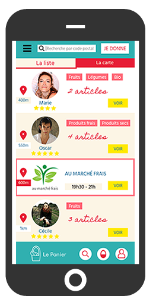

Le Panier est l’application qui vous permet de mettre à disposition ou de récupérer auprès d’un particulier un “panier” composé d’un ou de plusieurs produits alimentaires non entamés et encore consommables.
Copyright © 2018 Le Panier - All rights reserved
Comment ça marche ?